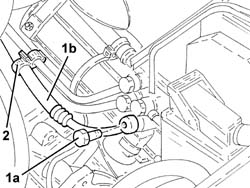
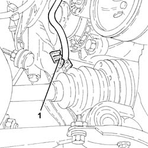
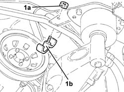
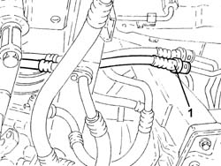
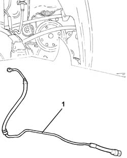
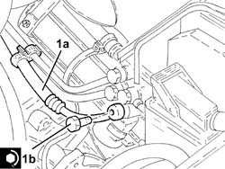
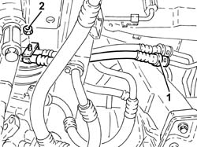
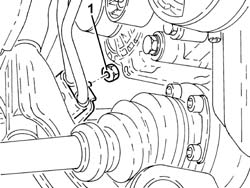
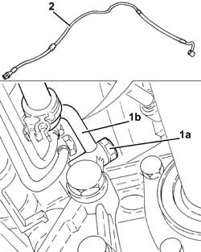
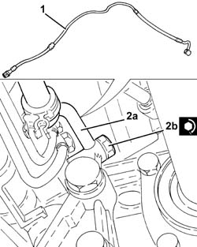

4130B49 RETURN PIPE FROM POWER STEERING CASE TO HEAT EXCHANGER PIPE R R
- Path
- Procedures > 41 STEERING UNIT > 4130 POWER STEERING > 4130B POWER STEERING HYDRAULIC SYTEM > 4130B49 RETURN PIPE FROM POWER STEERING CASE TO HEAT EXCHANGER PIPE R R
- Kind
- repair procedure (removal / refitting; the operation number is the code)
- Applies to
- engines: 1.8 T.SPARK, 2.0 JTS, 1.9 JTD 16V; all production periods
- Interactive page
- https://sloeber94.github.io/elrnDB-aGt/en/#/125001416
Applies to: engines: 1.8 T.SPARK, 2.0 JTS; all production periods
 Removing
Removing
 Refitting
RefittingPosition the vehicle on the ramp
Proceed with removal
Proceed with removal
Remove the power steering fluid reservoir and drain the fluid using a suitable syringe.
Op. 5530B52 BATTERY DRIP TRAY/SUPPORT - R.R.
1. Undo the connector (1a) and disconnect the return pipe from power steering box to heat exchanger (1b), power steering box side.
2. Release the return pipe from power steering box to heat exchanger from the retaining band on the power steering box.

Applies to: engines: 1.8 T.SPARK, 2.0 JTS; all production periods
Proceed with removal
Op. 7055B54 UNDER-ENGINE GUARD - R R
Proceed with removal
Proceed with removal
Op. 1076B18 RIGID SECTION OF EXHAUST PIPE BETWEEN CATALYTIC CONVERTER AND SILENCER - R + R
Proceed with removal
1. Release the return pipe from power steering box to heat exchanger from the retaining band on the front suspension beam.
Op. 4450B04 RIGHT FRONT WHEEL R R
Op. 7055B66 ENGINE COMPARTMENT DUST SHIELD PROTECTION IN RIGHT FRONT WHEEL ARCH - R.R.

Applies to: engines: 1.8 T.SPARK, 2.0 JTS; all production periods
1. Undo the nut (1a) and remove the bracket (1b) securing the power steering pipes.

Applies to: engines: 1.8 T.SPARK, 2.0 JTS; all production periods
1. Disconnect the quick-release fitting on the return pipe from power steering box to heat exchanger, heat exchanger side.

Applies to: engines: 1.8 T.SPARK, 2.0 JTS; all production periods
1. Remove the return pipe from power steering box to heat exchanger.

Applies to: engines: 1.8 T.SPARK, 2.0 JTS; all production periods
Refitting
RemovingRefit the return pipe from power steering box to heat exchanger in its seating.
Connect the quick-release fitting on the return pipe from power steering box to heat exchanger, heat exchanger side.
Refit the power steering pipe mounting bracket in its seating and secure with the nut.
Fix the return pipe from power steering box to heat exchanger to the band on the front suspension beam.
Secure the return pipe from power steering box to heat exchanger to the retaining band on the power steering box.
Proceed with refitting
Op. 7055B66 ENGINE COMPARTMENT DUST SHIELD PROTECTION IN RIGHT FRONT WHEEL ARCH - R.R..
Proceed with refitting
Op. 4450B04 RIGHT FRONT WHEEL R R.
Proceed with refitting
Op. 1076B18 RIGID SECTION OF EXHAUST PIPE BETWEEN CATALYTIC CONVERTER AND SILENCER - R + R.
Proceed with refitting
Op. 7055B54 UNDER-ENGINE GUARD - R R.
1. Connect the return pipe from power steering box to heat exchanger (1a), power steering box side, and tighten the connector (1b) to the specified torque.
 | Fastening | Component | Ø | Value (daNm) |
|---|---|---|---|---|
1b | Connector | PIPE FROM POWER STEERING BOX/EXCHANGER | M12 | (Power steering box side) 2.7 ÷ 3.3 |

Applies to: engines: 1.8 T.SPARK, 2.0 JTS; all production periods
Proceed with refitting
Op. 5530B52 BATTERY DRIP TRAY/SUPPORT - R.R..
Proceed with refitting
Proceed with refitting
Op. 0010T71 POWER STEERING FLUID CHECK LEVEL AND TOP UP IF NECESSARY.
Remove the car from the ramps.
Applies to: engines: 1.9 JTD 16V; all production periods
Removing
RefittingPosition the vehicle on the ramp
Proceed with removal
Op. 4450B12 FRONT OR REAR WHEELS (TWO) - R+R
Proceed with removal
Proceed with removal
Op. 7055B66 ENGINE COMPARTMENT DUST SHIELD PROTECTION IN RIGHT FRONT WHEEL ARCH - R.R.
Proceed with removal
Proceed with removal
Op. 7055B91 RIGHT FRONT WHEEL ARCH LINER - R.R.
Proceed with removal
1. Disconnect the quick-release fitting on the return pipe from power steering box to heat exchanger, heat exchanger side.
Op. 7055B54 UNDER-ENGINE GUARD - R R
2. Undo the nut for the front bracket fastening the supply and return pipes to the power assisted steering system heat exchanger.
Op. 1084C40 CONVOGLIATORE ARIA PER RADIATORE RAFFREDDAMENTO OLIO MOTORE - S.R.

Applies to: engines: 1.9 JTD 16V; all production periods
1. Undo the nut for the rear bracket fastening the supply and return pipes to the power assisted steering system heat exchanger.

Applies to: engines: 1.9 JTD 16V; all production periods
1. Undo the connector (1a) and disconnect the return pipe from power steering box to heat exchanger (1b), power steering box side.
2. Release and remove the return pipe from the power assisted steering box to the heat exchanger.

Applies to: engines: 1.9 JTD 16V; all production periods
Refitting
Removing1. Refit the return pipe from power steering box to heat exchanger in its seating.
2. Connect the return pipe from power steering box to heat exchanger (2a), power steering box side, and tighten the connector (2b) to the recommended torque.
| Fastening | Component | Ø | Value (daNm) |
|---|---|---|---|---|
2b | Connector | PIPE FROM POWER STEERING BOX/EXCHANGER | M12 | (Power steering box side) 2.7 ÷ 3.3 |

Applies to: engines: 1.9 JTD 16V; all production periods
Tighten the nuts for the brackets fastening the supply and return pipes to the power assisted steering system heat exchanger.
Connect the quick-release fitting on the return pipe from power steering box to heat exchanger, heat exchanger side.
Proceed with refitting
Op. 1084C40 CONVOGLIATORE ARIA PER RADIATORE RAFFREDDAMENTO OLIO MOTORE - S.R..
Proceed with refitting
Op. 7210E10 R.R. FRONT BUMPER.
Proceed with refitting
Op. 7055B54 UNDER-ENGINE GUARD - R R.
Proceed with refitting
Op. 7055B91 RIGHT FRONT WHEEL ARCH LINER - R.R..
Proceed with refitting
Op. 7055B66 ENGINE COMPARTMENT DUST SHIELD PROTECTION IN RIGHT FRONT WHEEL ARCH - R.R..
Proceed with refitting
Op. 4450B12 FRONT OR REAR WHEELS (TWO) - R+R.
Proceed with refitting
Op. 0010T71 POWER STEERING FLUID CHECK LEVEL AND TOP UP IF NECESSARY.
Remove the car from the ramps.
Topics linked from this page (11)
- 0010T71 POWER STEERING FLUID CHECK LEVEL AND TOP UP IF NECESSARY
- 1076B18 RIGID SECTION OF EXHAUST PIPE BETWEEN CATALYTIC CONVERTER AND SILENCER - R + R
- 1084C40 CONVOGLIATORE ARIA PER RADIATORE RAFFREDDAMENTO OLIO MOTORE - S.R.
- 4450B04 RIGHT FRONT WHEEL R R
- 4450B12 FRONT OR REAR WHEELS (TWO) - R+R
- 5530B10 BATTERY - R+R
- 5530B52 BATTERY DRIP TRAY/SUPPORT - R.R.
- 7055B54 UNDER-ENGINE GUARD - R R
- 7055B66 ENGINE COMPARTMENT DUST SHIELD PROTECTION IN RIGHT FRONT WHEEL ARCH - R.R.
- 7055B91 RIGHT FRONT WHEEL ARCH LINER - R.R.
- 7210E10 R.R. FRONT BUMPER